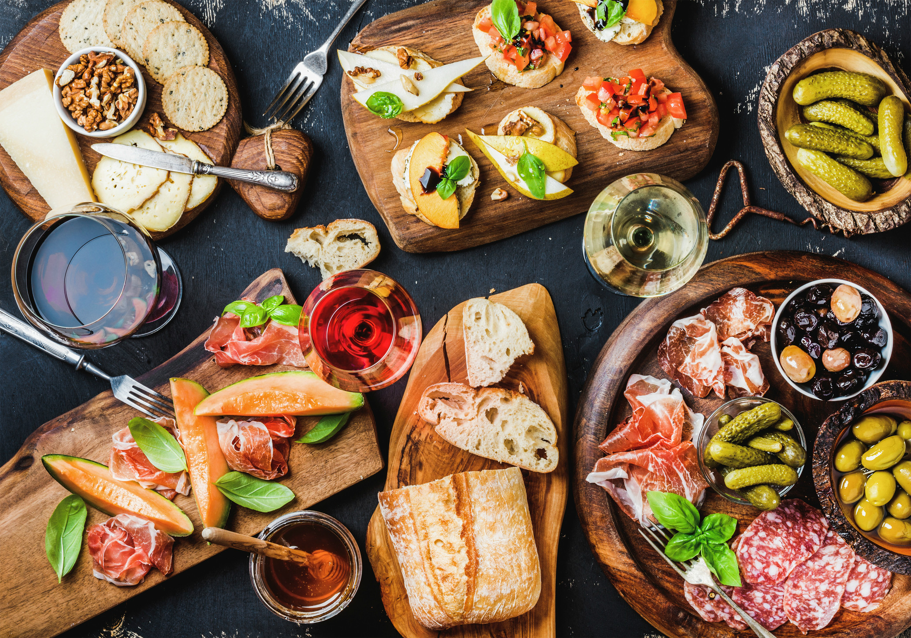

Pasta i basta!
Szukasz pomysłu na elegancką kolację przy świecach? A może niedzielny obiad z rodziną? Kuchnia włoska w swoim bogactwie przepisów inspiruje do tworzenia potraw na każdą okazję. Jeśli użyjesz świeżych, lokalnych produktów, nawet najprostsze danie godne będzie 5 gwiazdkowej restauracji. Poniżej prezentujemy najciekawsze, oryginalne, włoskie potrawy, spośród których każdy znajdzie coś dla siebie. Jeśli jesteś jeszcze niedoświadczonym kucharzem polecamy zacząć od przepisów na makarony i pizze. Jeśli na gotowaniu zjadłeś już zęby, to z pewnością zainteresuje cię sekcja mięs. Zapraszamy do rozpoczęcia przygody z kuchnią włoską!
